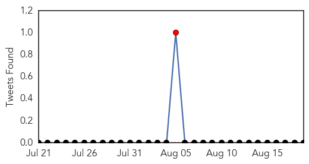
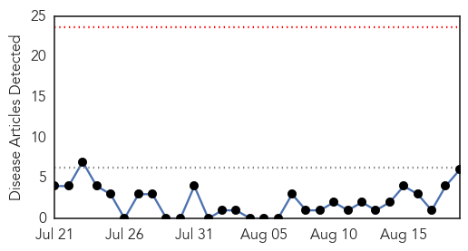
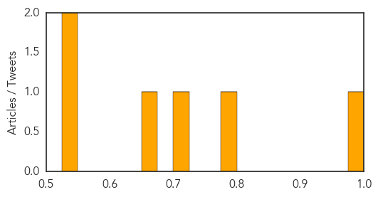

Meningitis
30-Day Web Trend
2 alerts, 0 warnings

30-Day Twitter Trend
1 alerts, 0 warnings

Article Locations

Article Confidences

Top Articles:
Top Tweets:
-
No tweets found for Aug 19, 2014
Measles
30-Day Web Trend
0 alerts, 0 warnings

30-Day Twitter Trend
0 alerts, 0 warnings

Article Locations
Article Confidences
Top Articles:
- 0.986
- Start of the school year a good reminder for parents to keep children's vaccines current, health officials say
- 0.786
- Why children's diseases move south to north across the US
- 0.720
- Autism and Vaccines: CDC Whistleblower Exposes Vaccine Dangers, Lies, and Cover-ups (Video)
- 0.671
- Higher Autism Rate Among African-American Boys Receiving MMR Shot Earlier than 36 Months
- 0.546
- Three measles cases at Melbourne school
- 0.532
- MJFF, Intel join hands to improve Parkinson’s disease treatment
Top Tweets:
-
No tweets found for Aug 19, 2014